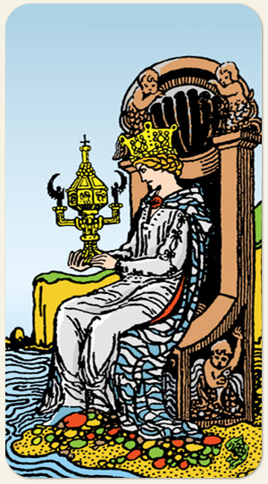

Rainha de Copas
A guardiã dos sentimentos, da devoção, da psique, do amor, sua taça é quase um cálice da hóstia, quase uma caixa de Pandora, ela é o centro do amor em todo o Tarot.
Positivo: Amor incondicional, maduro, pessoa amável, o amor em movimento, empatia, a força do cuidado, pessoa observadora, amar com as entranhas, amar com profundidade.
Negativo: Mágoa, afogar-se em sua dor, hipersensibilidade, egoísmo, fragilidade extrema, ódio, falsidade, medo, culpa, não abre mão no passado, memória de naftalina, pessoa melodramática, enjoativa, sede de atenção.
Símbolos: Divindades Femininas Aquáticas.
Cores: Cor, Cor, Cor.